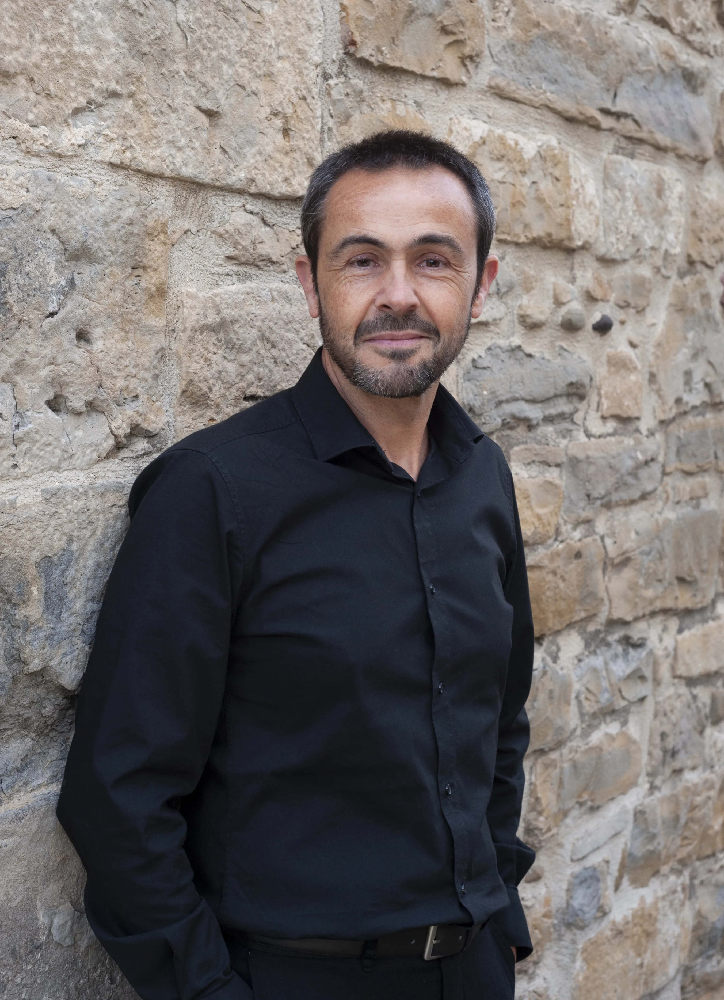

Pamplona, Navarra. Desde 2018.
Quiénes somos
Somos una formación integrada por personas con amplia experiencia en el mundo coral, que aborda distintos géneros y estilos a través de proyectos muy diversos.
Bajo el nombre del coro subyace la idea de la importancia que han tenido determinadas personas y momentos en nuestras vidas. Afrontamos la interpretación desde un punto de vista exigente y dinámico, con el objetivo de disfrutar de la música y hacer disfrutar al público.
Nuestro repertorio abarca distintas épocas de la historia de la música e incluye obras religiosas y profanas, así como piezas procedentes de los folklores de todo el mundo.
Actuamos en Pamplona y su entorno, así como en otras localidades de la geografía navarra (Roncesvalles, Zubiri, Aibar, Tafalla, Leyre, entre otras). También hemos realizado actuaciones fuera de nuestra comunidad, destacando el "Festival de Canto Coral Ciudad de Soria", el "Ciclo Coral Ciudad de Manzanares" o el ciclo "Navarra canta — Nafarroa kantari" en el Hogar Navarro de Logroño.
Además, colaboramos y participamos en diversos proyectos solidarios con instituciones como ADANO, Club Rotary, Grupo Solera Asistencial o Nuevo Futuro, entre otras.
Entre los proyectos destacados del año 2025, el coro ha participado en la “Gala de los Premios Max” celebrada en el Teatro Gayarre, así como en el espectáculo “Navarra suena de cine”, también en el Teatro Gayarre, junto a La Pamplonesa, interpretando obras de la compositora Paula Olaz.

Juan Gainza · Director
Al frente del coro
Miembro fundador y director · Coro Saudade de Pamplona
Realiza sus estudios musicales en el Conservatorio Superior de Música Pablo Sarasate, donde obtiene los títulos de Profesor Superior de Violonchelo y Profesor Superior de Música de Cámara. Es Licenciado en Derecho por la Universidad de Navarra.
Desde 2004 trabaja como director de la Escolanía y, desde 2007, como director del Coro Joven del Orfeón Pamplonés, además de ejercer como profesor de Lenguaje Musical en su Escuela Coral y en programas de formación para personas adultas.
Ha sido cantante y jefe de cuerda de tenores del Orfeón Pamplonés durante veinte años. Imparte habitualmente talleres corales para diferentes federaciones de coros y es requerido como jurado en diversos certámenes corales.
Ha realizado cursos de Dirección Coral con profesores como Johan Duijck, Néstor Andrenacci, Josep Prats, Juan Esteban, Judit Faller, Juan Luis Martínez, Javier Busto, Basilio Astúlez o Elisenda Carrasco, entre otros. Asimismo, ha recibido formación en técnica vocal con Izaskun Arruabarrena y ha participado en numerosos cursos con docentes como Ricardo Visus, Carme Baulenas, Paloma Pérez Íñigo o Mercé Baiget.
Es miembro fundador y director del Coro Saudade.
Agenda 2026
Momentos
En vivo
Audiciones abiertas
El Coro Saudade recibe nuevos integrantes que quieran compartir la pasión por el canto coral. Buscamos voces comprometidas, con ganas de aprender y disfrutar de la música en grupo.
No se requiere experiencia profesional, pero sí se valoran los conocimientos musicales. Si estás interesado, acércate a uno de nuestros ensayos o escríbenos.
📅 Ensayos
Martes y jueves, de 19:45 a 21:15 h
Iglesia de San Antonio Capuchinos · Pamplona · Centro
Ponte en contacto
Para contrataciones, solicitudes de conciertos o cualquier consulta, escríbenos directamente. También puedes encontrarnos en nuestras redes.
Martes y jueves · 19:45 – 21:15 h
Iglesia de San Antonio Capuchinos · Pamplona
Juan Gainza
Todos los datos se guardan de forma segura
Gracias por contactar con el Coro Saudade.
Te responderemos en breve.